(28) Lesion – cNVAE#
Motivation: Reproduce, it should segment.
# HIDE CODE
import os, sys
from IPython.display import display
# tmp & extras dir
git_dir = os.path.join(os.environ['HOME'], 'Dropbox/git')
extras_dir = os.path.join(git_dir, 'jb-MTMST/_extras')
fig_base_dir = os.path.join(git_dir, 'jb-MTMST/figs')
tmp_dir = os.path.join(git_dir, 'jb-MTMST/tmp')
# GitHub
sys.path.insert(0, os.path.join(git_dir, '_MTMST'))
from vae.train_vae import TrainerVAE, ConfigTrainVAE
from vae.vae2d import VAE, ConfigVAE
from figures.fighelper import *
from analysis.glm import *
# warnings, tqdm, & style
warnings.filterwarnings('ignore', category=DeprecationWarning)
from rich.jupyter import print
%matplotlib inline
set_style()
Load model#
mod_name = 'fixate1_z-14x[5,10,20]_k-32_d-17_enc(2x2)-dec(2x1)-pre(1x3)-post(1x3)'
fit_name = 'ep500-b1200-lr(0.002)_beta(0.1:0x0.3)_lamb(0.01)_gr(250.0)_(2024_02_24,22:42)'
tr, metadata = load_model(
model_name=mod_name,
fit_name=fit_name,
verbose=True,
device='cuda',
)
+--------------+------------+ | Module Name | Num Params | +--------------+------------+ | VAE | 39.3 Mil | | --- | --- | | stem | 320 | | pre_process | 96.0 K | | enc_tower | 22.5 Mil | | enc0 | 66.0 K | | enc_sampler | 3.0 Mil | | dec_sampler | 3.0 Mil | | expand | 287.1 K | | dec_tower | 10.3 Mil | | post_process | 40.0 K | | out | 578 | +--------------+------------+
# params: 39.3 M
print(f"{tr.cfg.name()}\n{tr.model.cfg.name()}")
ep500-b1200-lr(0.002)_beta(0.1:0x0.3)_lamb(0.01)_gr(250.0) fixate1_z-14x[5,10,20]_k-32_d-17_enc(2x2)-dec(2x1)-pre(1x3)-post(1x3)
Xtract#
x, _ = next(iter(tr.dl_tst))
x = x[:16]
show_opticflow(x);
%%time
z, ftr, y, q, p = tr.model.xtract_ftr(x)
x.shape, y.shape, len(z)
CPU times: user 179 ms, sys: 297 µs, total: 179 ms
Wall time: 178 ms
(torch.Size([16, 2, 17, 17]), torch.Size([16, 2, 17, 17]), 35)
show_opticflow(y);
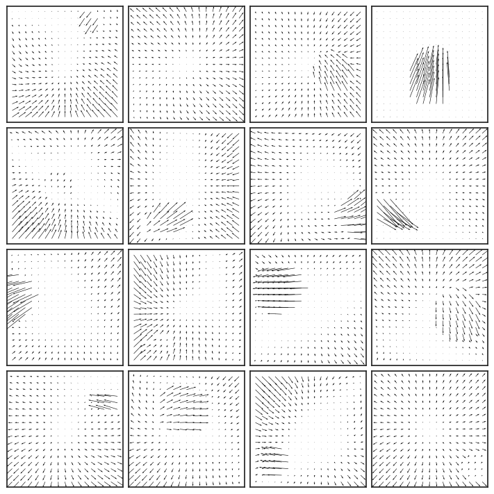
Lesion#
scales, _ = tr.model.latent_scales()
collections.Counter(scales), len(scales)
(Counter({2: 5, 4: 10, 8: 20}), 35)
lesion = {
s: [s == item for item in scales]
for s in np.unique(scales)
}
%%time
results_enc, results_z = {}, {}
for k, v in lesion.items():
results_enc[k] = tr.model.xtract_ftr(
x=x, lesion_enc=v)[2]
results_z[k] = tr.model.xtract_ftr(
x=x, lesion=v)[2]
CPU times: user 910 ms, sys: 23.1 ms, total: 933 ms
Wall time: 934 ms
Plot: enc lesion#
results2plot = torch.stack([x] + list(results_enc.values()))
results2plot.shape
torch.Size([4, 16, 2, 17, 17])
fig, axes = show_opticflow_row(results2plot, figsize=(20, 5), scale=5, display=False)
axes[0, 0].set_ylabel('Samples', fontsize=15)
for i, s in enumerate(lesion, start=1):
axes[i, 0].set_ylabel(f'{s} x {s}', fontsize=15)
display(fig)
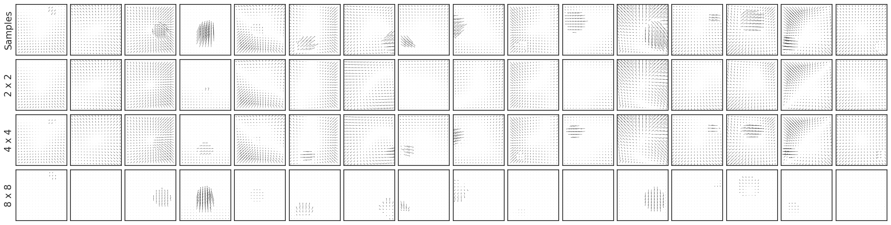
### was NVAE ###
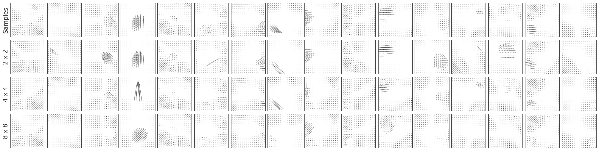
Plot: z lesion#
results2plot = torch.stack([x] + list(results_z.values()))
results2plot.shape
torch.Size([4, 16, 2, 17, 17])
fig, axes = show_opticflow_row(results2plot, figsize=(20, 5), display=False)
axes[0, 0].set_ylabel('Samples', fontsize=15)
for i, s in enumerate(lesion, start=1):
axes[i, 0].set_ylabel(f'{s} x {s}', fontsize=15)
display(fig)
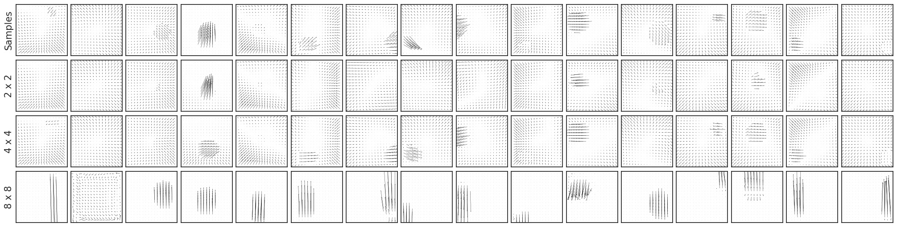
### was NVAE ###
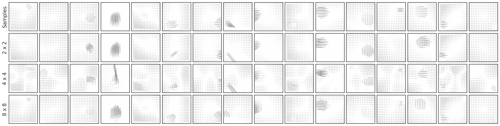
Plot enc_sampler weights#
w2p = tr.model.enc_sampler[25].conv.weight.data
w2p.shape
torch.Size([28, 64, 8, 8])
norms = torch.norm(w2p, dim=(2, 3))
norms = to_np(norms)
norms.shape
(28, 64)
fig, ax = create_figure()
sns.histplot(norms.ravel(), ax=ax)
ax.set_xscale('log')
plt.show()
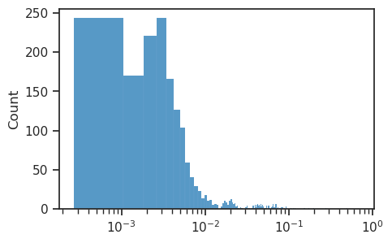
ids = np.argsort(norms.ravel())[::-1]
ids[:10]
array([ 337, 365, 372, 338, 368, 336, 350, 1245, 1219, 380])
x2p = to_np(w2p[np.unravel_index(ids[18], norms.shape)])
plt.imshow(x2p)
plt.colorbar()
plt.show()
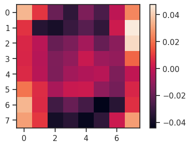
Validate#
val, loss = tr.validate()
loss['epe'].mean()
1.3025327
for k, v in val.items():
if 'fig' in k:
print(k)
display(v)
fig/sample
fig/regression
fig/bar
fig/bar_aux
fig/mutual_info
np.argmax(val['regr/mi'], axis=1)
array([266, 258, 186, 290, 305, 69, 81, 22, 155, 346, 355])
MEI#
rng = get_rng()
def compute_mei(model, idx, start, alpha=0.1, nsteps=100, scalefunc=lambda x: 1, eps=1e-3, name=''):
"""
Find an MEI for a given model and neuron ids.
-model: a pytorch model
-cids: a list of neuron ids
-start: the initial input
-alpha: the learning rate
-nsteps: the number of steps to run
-scalefunc: scales the learning rate as a func of step
-eps: the convergence threshold
-name: name for printing
"""
x = start.clone()
assert len(x) == 1
pbar = tqdm(range(nsteps))
for i in pbar:
model.zero_grad()
x_copy = x.clone()
# Get the current prediction
_, z, q, p = model(x)
mu = torch.concatenate([d.mu for d in q], dim=1)
mu = mu[0, idx].squeeze()
# z = flat_cat(z)
# z = z[0, idx]
# Get the gradient of output with respect to input
g = torch.autograd.grad(mu, x, retain_graph=True)[0]
g_norm = torch.norm(g)
if g is None or g_norm == 0:
print("No gradient at step", i)
return None
# Update tqdm description
msg = f"||g|| = {g_norm:0.5f}"
pbar.set_description(msg)
# Update the input
x = x_copy + scalefunc(i) * alpha * g
# Terminate if converged
if torch.abs(x - x_copy).max() < eps:
print(name, "converged at step", i)
break
return x
start = rng.normal(size=(1, 2, 17, 17))
start = nn.Parameter(
data=torch.tensor(start),
requires_grad=True,
)
start = tr.to(start)
show_opticflow_full(start[0]);
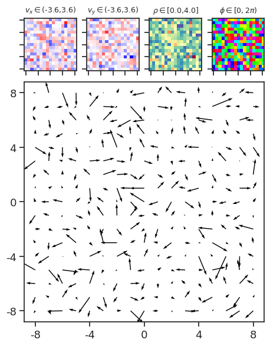
%%time
mei = compute_mei(
model=tr.model,
idx=69,
start=start,
nsteps=10000,
alpha=0.1,
)
||g|| = 0.09224: 100%|████████████████████| 10000/10000 [51:36<00:00, 3.23it/s]
CPU times: user 51min 37s, sys: 6.51 s, total: 51min 44s
Wall time: 51min 36s
show_opticflow_full(mei[0]);
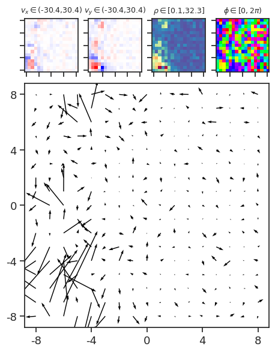
%%time
mei = compute_mei(
model=tr.model,
idx=155,
start=start,
nsteps=10000,
alpha=0.1,
)
||g|| = 10.49000: 100%|███████████████████| 10000/10000 [47:48<00:00, 3.49it/s]
CPU times: user 47min 50s, sys: 5.84 s, total: 47min 56s
Wall time: 47min 48s
show_opticflow_full(mei[0]);
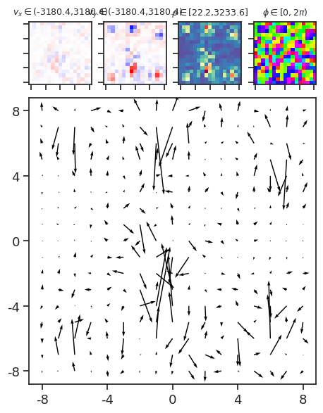
GLM on latents#
%%time
kws = dict(freeze=True, use_ema=False)
z_vld = tr.forward('vld', **kws)[0]['z']
z_tst = tr.forward('tst', **kws)[0]['z']
CPU times: user 2h 14min 52s, sys: 4min 2s, total: 2h 18min 54s
Wall time: 5min 22s
x_vld = to_np(tr.dl_vld.dataset.x)
x_tst = to_np(tr.dl_tst.dataset.x)
from sklearn.linear_model import Ridge
lr = Ridge(alpha=50000).fit(
X=flatten_stim(x_vld),
y=z_vld,
)
pred = lr.predict(flatten_stim(x_tst))
r2 = np.round(sk_metric.r2_score(
y_true=z_tst,
y_pred=pred,
multioutput='raw_values',
) * 100)
r2.mean()
15.263265306122449
r = 1 - np.diag(sp_dist.cdist(
XA=z_tst.T,
XB=pred.T,
metric='correlation',
))
sns.histplot(r);
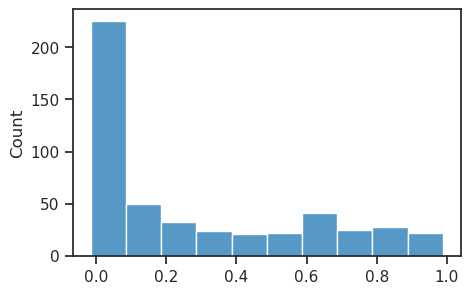
plt.plot(z_tst[1000:1200, ids[0]])
plt.plot(pred[1000:1200, ids[0]])
[<matplotlib.lines.Line2D at 0x7f547c13b100>]
sp_stats.pearsonr(r, r2)
(0.946963175982596, 9.577956237406823e-243)
ids = np.argsort(r2)[::-1]
ids[:5]
array([454, 302, 264, 422, 421])
kers = lr.coef_.reshape(-1, *x_vld.shape[1:])
kers.shape
(490, 2, 17, 17)
show_opticflow_full(kers[ids[1]]);
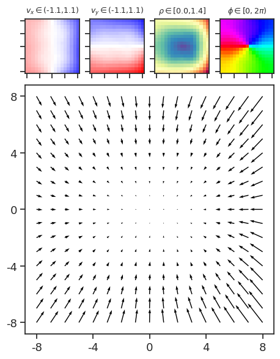
ids[0]
454